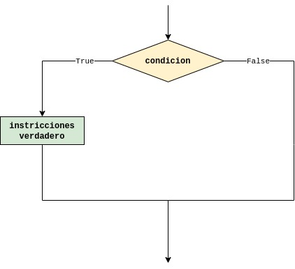
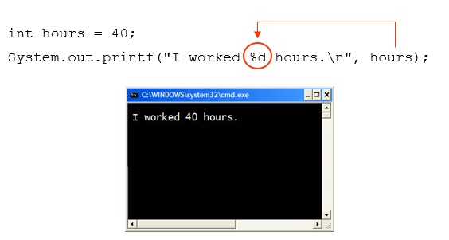
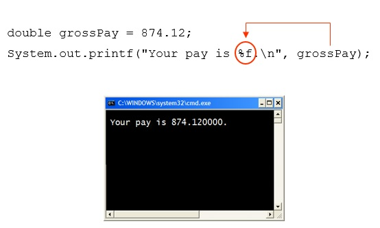
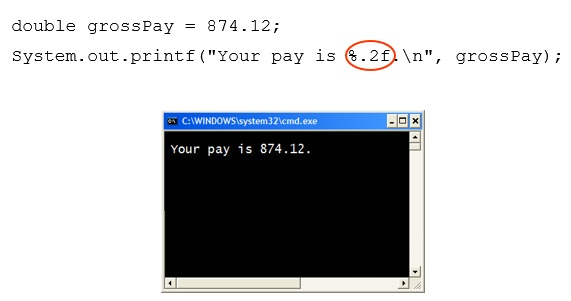
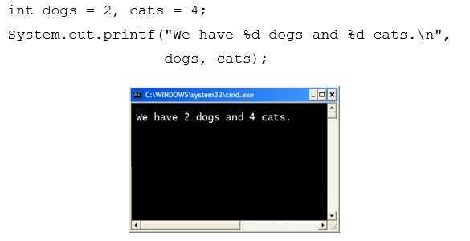

Estructuras de selección en java¶
Recordando el tema anterior¶
En las secciones anteriores se estudió todo aquello relacionado a la creación de programas sencillos, los tipos de datos, los tipos de operadores y las instrucciones de entrada y salida. Recuerde los métodos de la clase Scanner mostrados en la siguiente tabla:
Tipo |
Método |
|---|---|
|
|
|
|
|
|
|
|
|
|
|
|
|
|
|
|
A modo de repaso vamos a realizar el siguiente ejemplo:
Ejemplo 1: Hacer un programa que solicite una candidad de segundos y retorne una salida en la que se muestre la cantidad de minutos y segundos restantes asociados. A continuación se muestra un caso de uso cuando la cantidad de segundos ingresada es de 500:
Digite la cantidad de segundos: 500
500 segundos equivale a 8 minutos y 20 segundos
Solución en Python
seconds = int(input("Digite la cantidad de segundos: "))
minutes = seconds//60
remainingSeconds = seconds%60
print(str(seconds) + " segundos equivale a 8 minutos " + str(minutes)
+ " minutos y " + str(remainingSeconds) + " segundos")
Digite la cantidad de segundos: 500
500 segundos equivale a 8 minutos 8 minutos y 20 segundos
Solución en Java
import java.util.Scanner;
public class DisplayTime {
public static void main(String[] args) {
Scanner input = new Scanner(System.in);
System.out.print("Enter an integer for seconds: ");
int seconds = input.nextInt();
int minutes = seconds/60;
int remainingSeconds = seconds%60;
System.out.println(seconds + " seconds is " + minutes +
" minutes and " + remainingSeconds + " seconds");
}
}
Introducción¶
Para aquellos problemas en los cuales se hace necesario elegir entre dos o mas posibilidades se usa la estructura condicional. En una estructura condicional el flujo de ejecución del programa depende de operaciones cuyo resultado es booleano (true o false) por lo que a modo de repaso mostramos lo diferentes operadores tanto en python como en java:
Operadores relacionales:
Python |
Java |
|---|---|
|
|
|
|
|
|
|
|
|
|
|
|
Operadores lógicos:
Python |
Java |
|---|---|
|
|
|
|
|
|
La teniendo en cuenta lo anterior, la siguiente tabla muestra algunos casos en los cuales se muestran expresiones logicas implementadas en python y Java:
Enunciado en palabras |
Python |
Java |
|---|---|---|
Sea |
|
|
Teniendo en cuenta la variable |
|
|
Sea |
|
|
Sea |
|
|
Sea |
|
|
Tipos de condicionales¶
En lo que respecta las estructuras condicionales se manejan tres tipos:
Condicional simple.
Condicional doble.
Condicional multiple
1. Condicional simple.¶
Esta es la forma mas simple de la estructura condicional. Para este caso solo hay ejecución de las instrucciones cuando la condición es verdadera. La forma se muestra en la siguiente figura:

A continuación se muestra una comparación de la sintaxis de java con la de python:
Lenguaje |
Sintaxis |
|---|---|
Python |
|
2. Salida en pantalla en Java¶
El dispositivo de salida estándar suele ser un monitor. En Java la salida en el dispositivo de salida estándar se efectúa empleando el objeto de salida estándar System.out. El objeto System.out tiene acceso a dos métodos, print y println, para dar salida a una cadena en el dispositivo de salida estándar.
La forma general empleada para mostrar algo en consola se muestra a continuación:
System.out.printf(FormatString, ArgList);
Donde:
FormatString: String que contiene texto y/o espeficidadores de formato especiales.
ArgList: Es una lista de argumentos adicionales que seran formateados de acuerdo a los especificadores de formato listadoa en el argumento pasado como
FormatString.
Es importante aclarar sintaxis anterior tambien aplica al método println. La diferencia entre los metodos print y println radica en que el último método agrega un enter al final de la cadena desplegada en la pantalla.
Para comprender como es la salida en pantalla en java, realicemos una comparación con el caso de python mediante una serie de ejemplos.
Ejemplo 1: Dado el siguiente código python:
print("Adios mundo cruel")
Adios mundo cruel
¿Como es su implementacion en java?
%%tutor -l java -k
public class ExampleIO1 {
public static void main(String[] args) {
System.out.println("Adios mundo cruel");
}
}
Ejemplo 2: Dado el siguiente código python:
print(29/4)
print("Hola que tal?")
print(12)
print("4 + 7")
print(4 + 7)
print('A')
print("4 + 7 = " + str(4 + 7)) # print("4 + 7 =",(4 + 7))
print(2 + 3*5)
print("Hola \nque tal?")
7.25
Hola que tal?
12
4 + 7
11
A
4 + 7 = 11
17
Hola
que tal?
La implementación en java es:
%%tutor -l java -k
public class ExampleIO2 {
public static void main(String[] args) {
System.out.println("Adios mundo cruel");
System.out.println(29/4);
System.out.println("Hola que tal?");
System.out.println(12);
System.out.println("4 + 7");
System.out.println(4 + 7);
System.out.println('A');
System.out.println("4 + 7 = " + (4 + 7));
System.out.println(2 + 3*5);
System.out.println("Hola \nque tal?");
}
}
Ejemplo 3: Dado el siguiente código python:
print("Hola que tal. ", end = "")
print("Mi nombre es Bon, James Bon.")
Hola que tal. Mi nombre es Bon, James Bon.
La implementación en código java se muestra a continuación:
%%tutor -l java -k
public class ExampleIO3 {
public static void main(String[] args) {
System.out.print("Hola que tal. "); // Metodo print (no hay cambio de linea)
System.out.println("Mi nombre es Bon, James Bon."); // Metodo println
}
}
Caracteres especiales¶
La siguiente tabla muestra algunas secuencias de escape las cuales permiten controlar la salida mostrada en pantalla.
Simbolo |
Secuencia de escape |
Descripción |
|---|---|---|
|
Nueva línea |
El cursor se mueve al inicio de la siguiente línea |
|
Tabulador |
El cursor se mueve a la siguiente parada del tabulador |
|
Espacio de retroceso |
El cursor se mueve un espacio a la izquierda |
|
Retorno |
El cursor se mueve al inicio de la línea actual (no a la siguiente línea) |
|
Diagonales invertidas |
Se imprime una diagonal inversa |
|
Comilla simple |
Se imprime una comilla simple |
|
Comilla doble |
Se imprimen comillas dobles |
Ejemplo 4: Analice y comprenda la salida arrojada por el siguiente programa en java:
%%tutor -l java -k
public class ExampleIO4 {
public static void main(String[] args) {
System.out.println("Hello " + "World");
System.out.println("The value is: " + 5);
System.out.println("The value is: " + value);
System.out.println();
System.out.print("These are our top sellers:\n");
System.out.print("\tComputer games\n\tCoffee\n ");
System.out.println("\tAspirin");
System.out.println();
System.out.println("We can join a string to " +
"a number like this: " + 5);
System.out.println();
System.out.println("The following will be printed " +
"in a tabbed format: " +
"\n\tFirst = " + 5 * 6 + ", " +
"\n\tSecond = " + (6 + 4) + "," +
"\n\tThird = " + 16.7 + ".");
}
}
Formateando la salida¶
Recordemos la sintaxis de uso asociada a las funciones print y println
System.out.printf(FormatString, ArgList);
Mediante el formateo de una salida, se puede obtener un mayor control sobre lo que se quiere mostrar a la salida. Antes de entrar en detalle a hablar del tema, observe las siguiente figuras:




Si observa con detenimiento, hay una porción de la cadena que contiene el signo de % seguido de unos caracteres (Cerrado en circulo en las figuras anteriores), a esta se le conoce como especificador de formato y control. Un especificador de formato para uso general, carácter y tipos numéricos tiene la siguiente sintaxis:
%[argument_index$][flags][width][.precision]conversion
Sobre la sintaxis anterior tenemos:
Las expresiones entre corchetes son opcionales. Es decir, pueden o no aparecer en un especificador de formato.
La opción
argument_indexes un número entero (decimal), que indica la posición del argumento en la lista de argumentos.La opción
flagses un conjunto de caracteres que modifica el formato de salida. El conjunto de banderas válidas depende de la conversión.La opción
widthes un número entero (decimal), que indica el número mínimo de caracteres que se escriben en la salida.La opción
precisiones un número entero (decimal) que normalmente se usa para restringir el número de caracteres. El comportamiento específico depende de la conversión.La
conversionrequerida es de un carácter que indica cómo se debe formatear el argumento. El conjunto de conversiones válidas para un argumento dado depende del tipo de datos del argumento. La siguiente tabla muestra algunos de los caracteres empleados para conversión:
Caracter de conversion |
Descripción |
|---|---|
|
Cadena de caracteres |
|
Carácter sencillo |
|
Entero en formato de decimal |
|
Punto flotante en formato en notación científica |
|
Punto flotante en formato en decimal |
Los siguientes ejemplos permiten entender el siguificado del formateo anteriormente expuesto:
Ejemplo 5:
%%tutor -l java -k
public class ExampleIO5 {
public static void main(String[] args) {
double horas = 34.45;
double tarifa = 15.00;
double tolerancia = 0.01000;
System.out.println("Notacion decimal fija:");
System.out.printf("horas = %.2f, tarifa = %.2f, pago = %.2f," +
" tolerancia = %.2f\n\n", horas, tarifa, horas * tarifa, tolerancia);
System.out.println("Notacion cientifica:");
System.out.printf("horas = %e, tarifa = %e, pago = %e, \n" +
"tolerancia = %e\n",horas, tarifa, horas * tarifa, tolerancia);
}
}
Ejemplo 6:
%%tutor -l java -k
public class ExampleIO6 {
public static void main(String[] args) {
final double PI = 3.14159265;
double radio = 12.67;
double altura = 12.00;
System.out.println("Dos cifras decimales: ");
System.out.printf("radio = %.2f, "
+ "altura = %.2f, volumen = %.2f, "
+ "PI = %.2f\n\n", radio, altura,PI * radio * radio * altura, PI);
System.out.println("Tres cifras decimales: ");
System.out.printf("radio = %.3f, "
+ "altura = %.3f, volumen = %.3f, "
+ "PI = %.3f\n\n", radio, altura,PI * radio * radio * altura, PI);
System.out.println("Cuatro cifras decimales: ");
System.out.printf("radio = %.4f, "
+ "altura = %.4f, volumen = %.4f, "
+ "PI = %.4f\n\n", radio, altura,PI * radio * radio * altura, PI);
System.out.println("Diferentes cifras decimales: ");
System.out.printf("radio = %.1f, "
+ "altura = %.2f, volumen = %.5f, "
+ "PI = %.4f\n\n", radio, altura,PI * radio * radio * altura, PI);
}
}
Ejemplo 7:
%%tutor -l java -k
public class ExampleIO7 {
public static void main(String[] args) {
int num = 96;
double tasa = 15.50;
System.out.println("123456789012345");
System.out.printf("%5d \n", num);
System.out.printf("%5.2f \n", tasa);
System.out.printf("%5d%6.2f \n", num, tasa);
System.out.printf("%5d%6.2f \n", num, tasa);
}
}
Ejemplo 8:
%%tutor -l java -k
public class ExampleIO8 {
public static void main(String[] args) {
int num = 763;
double x = 658.75;
String str = " Programa Java.";
System.out.println("1234567890123456789" +
"01234567890");
System.out.printf("%5d%7.2f%15s\n", num, x, str);
System.out.printf("%15s%6d%9.2f\n", str, num, x);
System.out.printf("%8.2f%7d%15s\n", x, num, str);
System.out.printf("num = %5d\n", num);
System.out.printf("x = %10.2f\n", x);
System.out.printf("str = %15s\n", str);
System.out.printf("%10s%7d\n", "Programa No.", 4);
}
}
Ejemplo 9:
%%tutor -l java -k
public class ExampleIO8 {
public static void main(String[] args) {
int num = 763;
double x = 658.75;
String str = "Programa Java.";
System.out.println("1234567890123456789" + "01234567890");
System.out.printf("%-5d%7.2f%-15s *** \n", num, x, str);
System.out.printf("%-15s%-6d%-9.2f *** \n", str, num, x);
System.out.printf("%-8.2f%-7d%-15s *** \n", x, num, str);
System.out.printf("num = %-5d ***\n",num);
System.out.printf("x = %-10.2f ***\n", x);
System.out.printf("str = %-15s ***\n", str);
System.out.printf("%-10s%-7d ***\n", "Programa No.", 4);
}
}
Entrada en Java¶
Para leer datos desde el teclado se usa la clase Scanner. Esta clase se encuentre definida en java.util, es necesario importarla agregando la siguiente sentencia en el código fuente:
import java.util.Scanner;
La clase Scanner trabaja con System.in.
Uso de la clase Scanner¶
A continuación se detallan los pasos necesarios para entrar datos por teclado mediante la clase Scanner:
Instanciar un objeto de la clase
Scanner:
Scanner keyboard = new Scanner (System.in);
Hacer uso de los diferentes métodos de la
Scannera traves del objeto creado para tal fin. Por ejemplo, si lo que se deseara es entrar los datos asociados a un nombre el código seria el siguiente:
System.out.print("¿Cual es su nombre?");
String nombre;
nombre = keyboard.nextLine();
La clase Scanner usa métodos diferentes para ingresar los datos según el tipo al que pertenecen. La siguiente tabla muestra como llevar a cabo esto:
Método |
Ejemplo y descripción |
|---|---|
|
Ejemplo de uso: |
|
Ejemplo de uso: |
|
Ejemplo de uso: |
|
Ejemplo de uso: |
|
Ejemplo de uso: |
|
Ejemplo de uso: |
|
Ejemplo de uso: |
Para aterrizar esto, miremos un programa que ilustre como se entra datos empleando java y python.
Ejemplo 10: Elabore un algoritmo que lea el nuombre de una persona y que imprima el mensaje Hola seguido del nombre de la persona.
Python
nom = input("Digite su nombre: ")
print("Hola " + nom)
Digite su nombre: Ramon Valdez
Hola Ramon Valdez
Java
import java.util.Scanner;
public class ExampleIO10 {
public static void main(String[] args) {
String nom;
System.out.print("Digite su nombre: ");
Scanner teclado = new Scanner(System.in); // Declaracion de un objeto (llamado teclado) de la clase Scanner
nom = teclado.nextLine();
System.out.println("Hola " + nom);
}
}
Ejemplo 11: Elabore un algoritmo que lea el nombre de una persona, la estatura (en cm) y el peso (en kg) y que muestre los datos leidos y la relacion estatura peso (IMC: Indice de masa corporal) cuya formula es:
\(IMC=\frac{peso}{estatura^2}\)
Python
peso = float(input("Digite el peso (en kg): "))
estatura = float(input("Digite la estatura (en cm): "))
estatura /= 100
IMC = peso/estatura**2
print("IMC: " + str(IMC))
Digite el peso (en kg): 74
Digite la estatura (en kg): 172
IMC: 25.013520822065985
Java
import java.util.Scanner;
import java.lang.Math;
public class ExampleIO11 {
public static void main(String[] args) {
// Declaracion de variables y objetos
double peso, estatura, IMC;
Scanner keyboard = new Scanner(System.in);
// Programa
System.out.print("Digite el peso (en kg): ");
peso = keyboard.nextDouble();
System.out.print("Digite la estatura (en cm): ");
estatura = keyboard.nextDouble();
estatura /= 100;
IMC = peso/Math.pow(estatura, 2);
System.out.println("IMC: " + IMC);
}
}
Ejemplo 12: Elabore un algoritmo que lea los datos enteros correspondientes a los catetos de un triangulo rectangulo y que calcule en imprima el valor de la hipotenusa de dicho triangulo.
Python
import math
cat1 = int(input("Digite el cateto 1: "))
cat2 = int(input("Digite el cateto 2: "))
hip = math.sqrt(math.pow(cat1, 2) + math.pow(cat2, 2))
print("La hipotenusa es:",hip)
Digite el cateto 1: 3
Digite el cateto 2: 4
La hipotenusa es: 5.0
Java
import java.util.Scanner;
import java.lang.Math;
public class ExampleIO12 {
public static void main(String[] args) {
// Declaracion de variables y objetos
int cat1, cat2;
double hip;
Scanner entrada = new Scanner(System.in);
// Programa
System.out.print("Digite el cateto 1: ");
cat1 = entrada.nextInt();
System.out.print("Digite el cateto 2: ");
cat2 = entrada.nextInt();
hip = Math.sqrt(Math.pow(cat1, 2) + Math.pow(cat2, 2));
System.out.println("La hipotenisa es: " + hip);
}
}
Ejemplo 13: Elabore un algoritmo que solicite un numero de dos digitos y que devuelva como salida el numero invertido. Por ejemplo, si el usuario ingresa 23, el programa deberá mostrar 32.
num = int(input("Digite un numero entero de 2 digitos: "))
dec = num//10
unid = num%10
numInv = unid*10 + dec
print("-> Respuesta:", numInv)
Digite un numero entero de 2 digitos: 32
-> Respuesta: 23
Java
import java.util.Scanner;
import java.lang.Math;
public class ExampleIO13 {
public static void main(String[] args) {
// Declaracion de variables y objetos
int dec, unid, num, numInv;
Scanner key = new Scanner(System.in);
dec = num/10;
unid = num%10;
numInv = unid*10 + dec;
// Programa
System.out.print("-> Respuesta: " + numInv);
}
}
Ejemplo 14: Ejecute y analice el siguiente programa hecho en java:
import java.util.*;
public class ExampleIO14 {
public static void main(String[] args) {
Scanner consola = new Scanner(System.in);
int pies;
int pulgadas;
System.out.println("Ingrese dos enteros separados por espacios.");
pies = consola.nextInt();
pulgadas = consola.nextInt();
System.out.println("pies = " + pies);
System.out.println("pulgadas = " + pulgadas);
}
}
Ejemplo 15: Ejecute y analice el siguiente programa hecho en java:
import java.util.*;
public class ExampleIO15 {
public static void main(String[] args) {
Scanner console = new Scanner(System.in);
String nombre;
String apellido;
int edad;
double peso;
System.out.println("Ingrese apellido, nombre,"
+ "edad y peso separados "
+ "por espacios.");
nombre = console.nextLine();
apellido = console.nextLine();
edad = console.nextInt();
peso = console.nextDouble();
System.out.println("Nombre: " + nombre + " " + apellido);
System.out.println("Edad: " + edad);
System.out.println("Peso: " + peso);
}
}